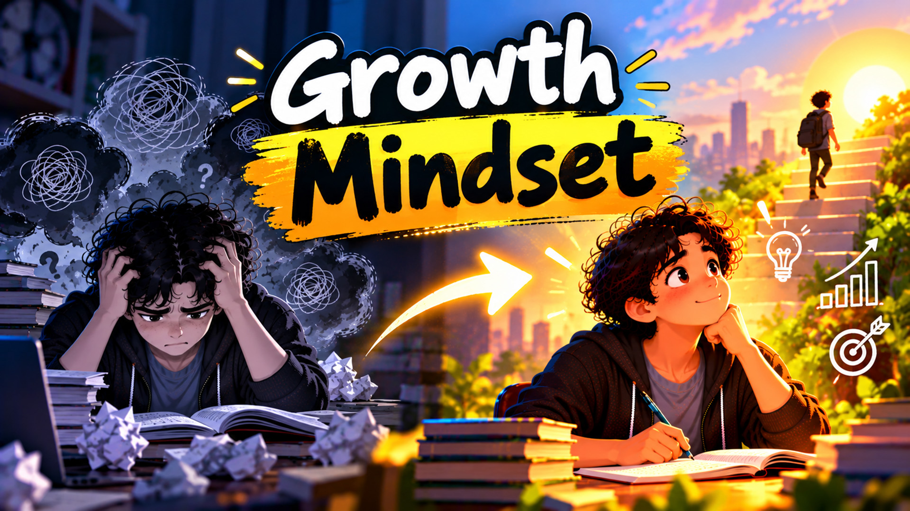

Have you ever looked at someone who seems exceptionally talented at something and thought, "I could never do that"?
Perhaps it was a student who understands mathematics effortlessly, a programmer who builds complex applications, an athlete who performs incredibly well, or someone who seems to achieve everything they set their mind to.
We often look at these people and assume they possess something we don't. We tell ourselves that they are naturally intelligent, unusually talented, or simply better equipped than we are.
But what if this assumption is holding us back?
What if the difference between someone who eventually masters a difficult skill and someone who gives up halfway is not necessarily intelligence or talent, but the way they think about their own ability to improve?
This brings us to an important concept in psychology and education: the growth mindset.
A growth mindset is more than simply being optimistic. It is the belief that our abilities, intelligence, and skills can develop through consistent effort, effective strategies, learning, and experience.
It changes how we approach challenges, how we respond to failure, and, perhaps most importantly, how we see our own potential.

Psychologist Carol Dweck introduced the concepts of fixed and growth mindsets through her research on motivation and achievement.
According to this framework, people often approach their abilities in two different ways.
A person with a fixed mindset tends to believe that intelligence and abilities are largely predetermined.
They might think:
Notice something interesting about these statements.
They don't describe temporary difficulties. They describe abilities as permanent characteristics.
When someone believes their abilities cannot change, every challenge becomes a potential threat to their self-image.
If they struggle with a difficult programming problem, they might conclude that they are not intelligent enough to become a programmer.
If they perform poorly in an examination, they might conclude that they are simply not good at academics.
Instead of seeing a challenge as an opportunity to improve, they see it as evidence of their limitations.
A person with a growth mindset approaches the same situations differently.
They might think:
The difference is not that people with a growth mindset never experience frustration or self-doubt.
They do.
The difference is how they interpret those experiences.
They understand that their current level of ability does not necessarily represent their future potential.
You are not limited to what you can do today. You can develop the ability to do things that you cannot do today. That is the foundation of a growth mindset.
Before we attempt something difficult, we need to believe that improvement is possible.
Consider a student who struggles with physics.
They repeatedly make mistakes while solving numerical problems. They cannot understand certain concepts, and their examination scores are disappointing.
Eventually, they begin thinking:
"I am just not a physics person."
Now imagine that the same student approaches the situation with a different belief:
"I don't understand physics as well as I would like to right now, but there must be a way for me to improve."
This small change in thinking can influence almost everything that follows.
The student may become more willing to:
The belief that improvement is possible creates the willingness to take action.
Without that belief, even the best learning resources, teachers, and opportunities may go unused.
Think about it this way.
If you believe you cannot become better at something, why would you invest your time and energy in trying?
But if you believe improvement is possible, effort begins to make sense.
This is why believing in your capacity to grow is so important.
It provides a reason to keep learning even when progress is slow.
Positive thinking is frequently misunderstood.
Some people assume that positive thinking means being happy all the time, ignoring difficulties, or convincing yourself that everything will work out perfectly.
That is not what meaningful positive thinking looks like.
Real positive thinking involves developing a constructive and realistic interpretation of situations.
It means recognising difficulties without allowing them to define your entire future.
Consider these two situations.
You spend three hours studying a difficult programming concept, but you still cannot understand it.
Your immediate thoughts might be:
"I am wasting my time. I am never going to understand programming. Perhaps I am not intelligent enough for this."
You encounter exactly the same difficulty, but you interpret it differently:
"This concept is more complicated than I expected. Perhaps I need to break it into smaller parts or find a different explanation. I haven't understood it yet, but that doesn't mean I cannot."
The external situation has not changed.
You still have the same difficult programming concept in front of you.
However, your interpretation has changed.
And that interpretation can influence your next action.
Instead of giving up, you might search for another tutorial, experiment with a small coding example, or ask someone to explain the concept differently.
Positive thinking is valuable because it can help us remain engaged with problems rather than immediately withdrawing from them.
It does not guarantee success, but it can make constructive action more likely.
Our internal conversations have a significant influence on how we approach everyday challenges.
Here are some examples of how you can reframe unhelpful thoughts.
| Negative thinking | Growth-oriented thinking |
|---|---|
| I am not intelligent enough. | I can develop my understanding through learning. |
| I always make mistakes. | I can learn from the mistakes I make. |
| This is too difficult. | I need to break this into smaller steps. |
| I will never understand this. | I haven't found the right approach yet. |
| Others are better than me. | I can learn from people who are more experienced. |
| I failed. | I have discovered what didn't work. |
| I am not capable of doing this. | I can work towards developing this ability. |
The objective is not to replace every negative thought with an unrealistic positive statement.
It is to develop a more balanced and constructive way of thinking.
Instead of saying, "I am brilliant and can do anything," you can say, "I may not know how to do this today, but I can learn."
That is a much more useful belief.
One of the most fascinating discoveries in neuroscience is that the human brain is not a completely fixed structure.
The brain possesses a remarkable ability called neuroplasticity.
Neuroplasticity refers to the brain's capacity to change its structure and functioning in response to experience, learning, and repeated activity.
When you learn a new programming language, practise solving mathematical problems, develop a musical skill, or acquire a new language, your brain undergoes changes associated with learning.
Neural connections can become stronger, networks can reorganise, and previously unfamiliar activities can become more efficient with practice.
For example, consider someone learning Python programming for the first time.
Initially, even understanding basic syntax may require considerable mental effort.
They might struggle with variables, loops, functions, and object-oriented programming.
But as they repeatedly practise these concepts, identify mistakes, and apply their knowledge to small projects, the process becomes more familiar.
Eventually, they can write code with greater confidence and less conscious effort.
What initially seemed complicated gradually becomes manageable.
This is one reason why we should be careful about declaring ourselves incapable of learning something.
Our current level of understanding is only a snapshot of our development.
It does not tell us everything about what we could eventually achieve.
A growth mindset does not mean that working harder automatically guarantees success.
This is an important distinction.
Imagine two programming students.
Both spend five hours trying to understand a particular programming concept.
The first student repeatedly watches the same tutorial without testing their understanding.
The second student watches the tutorial, writes small programs, experiments with different inputs, identifies errors, and tries to explain the concept in their own words.
Both have invested five hours.
However, their learning experiences are very different.
The second student is actively engaging with the material and receiving feedback.
Growth comes from effort combined with effective learning strategies, feedback, and reflection.
If something isn't working, simply repeating the same activity may not produce meaningful improvement.
Instead, ask yourself:
A growth mindset encourages us not only to put in effort but also to examine whether that effort is producing results.
One of the biggest obstacles to developing a positive attitude towards learning is constant comparison.
Imagine that you have just started learning web development.
You open LinkedIn and see someone who has built an impressive application, secured a job at a major technology company, or launched a successful startup.
Suddenly, your own progress seems insignificant.
You begin wondering why you are not as good as that person.
But there is something important you might be overlooking.
You are comparing your beginning with someone else's accumulated experience.
You do not see the years of practice, failed projects, mistakes, confusion, and learning that contributed to their current abilities.
Everyone starts somewhere.
A person who is now an excellent programmer was once a beginner who struggled with basic syntax.
An accomplished scientist was once a student who did not understand fundamental concepts.
A successful entrepreneur was once someone with an idea and very little experience.
Instead of using other people's achievements as evidence of your inadequacy, use them as evidence of what sustained learning and development can make possible.
Your most meaningful comparison should be with your previous self.
Ask yourself:
Small improvements accumulate.
And over time, those improvements can lead to remarkable results.
Many people develop an unhealthy relationship with failure.
They see failure as something embarrassing that must be avoided at all costs.
This can make them reluctant to attempt difficult tasks, ask questions, experiment with unfamiliar ideas, or challenge themselves.
But failure is an unavoidable part of learning.
Consider how programmers develop software.
A program rarely works perfectly on the first attempt.
There are syntax errors, logical errors, unexpected outputs, broken dependencies, and situations that the developer did not anticipate.
Debugging is an essential part of programming because it helps developers identify what went wrong and make corrections.
Learning works in a similar way.
When you make a mistake in a mathematics problem, you have an opportunity to identify a gap in your understanding.
When you get an examination question wrong, you can investigate whether the problem was conceptual understanding, calculation, interpretation, or time management.
When you struggle to understand a new topic, you can identify which prerequisite concepts need attention.
The important thing is to move beyond simply recognising that you made a mistake.
Ask yourself what the mistake is teaching you.
A useful approach is:
Failure becomes much more useful when it leads to reflection and corrective action.
Remember, making mistakes does not mean you are incapable.
It means there is something you can investigate, understand, and improve.
Sometimes people wait until they feel confident before attempting something difficult.
They tell themselves:
"I will start when I feel ready."
"I will begin studying seriously when I feel motivated."
"I will start learning programming when I am confident that I can do it."
But confidence does not always come before action.
Often, confidence develops because of action.
Imagine that you want to learn programming.
Instead of setting an unrealistic goal of building a complete application within a week, start with something manageable.
On the first day, write a simple Python program.
On the second day, learn how conditional statements work.
On the third day, write a program using loops.
Gradually, start working with functions, data structures, and small projects.
Every completed task provides an opportunity to recognise your progress.
These small achievements can strengthen your belief that you are capable of learning increasingly difficult things.
This is particularly important when you are trying to overcome procrastination or a lack of motivation.
A small completed task can make the next task feel less intimidating.
You do not need to accomplish something extraordinary every day.
You need to create opportunities for consistent progress.
One of the most powerful changes you can make is to become more conscious of the questions you ask yourself.
When faced with a challenge, people often ask:
"Why can't I do this?"
"What if I fail?"
"What if I am not good enough?"
These questions direct attention towards limitations and possible negative outcomes.
Try asking different questions:
"What would I need to learn to accomplish this?"
"Who could help me understand this better?"
"What is one small step I can take today?"
"What can I do differently?"
"What would happen if I continued practising for another month?"
These questions encourage you to look for possibilities and practical solutions.
This does not mean ignoring genuine limitations.
You may not have enough time, resources, knowledge, or experience to accomplish something immediately.
But recognising a limitation is different from believing that the limitation will always exist.
You can work towards changing your circumstances, developing new skills, and finding alternative approaches.
The ability to think in terms of possibilities is an important part of personal development.
A growth mindset is not something you develop simply by reading about it.
It requires repeated practice in everyday situations.
Here are some practical ways to begin.
Whenever you catch yourself saying, "I cannot do this," try adding the word "yet."
"I cannot understand this concept yet."
"I cannot solve these problems yet."
"I am not confident with programming yet."
The word yet reminds you that your current abilities are still developing.
Instead of focusing exclusively on marks, grades, or outcomes, identify what you want to learn.
For example:
Performance goals tell you what you want to achieve.
Learning goals tell you what you need to develop along the way.
Both are important, but learning goals help you focus on the process of improvement.
Occasionally choose tasks that are slightly beyond your current ability.
If everything you do is easy, you may not be giving yourself enough opportunities to develop.
Try solving unfamiliar problems, learning new concepts, or working on projects that require you to think differently.
The objective is not to make everything unnecessarily difficult.
It is to gradually expand what you are capable of doing.
At the end of each day, spend a few minutes reflecting on what you learned.
Ask yourself:
Reflection helps transform everyday experiences into learning opportunities.
The environment around you can influence how you think about your abilities.
Spend time with people who are curious, willing to learn, open to feedback, and supportive of personal development.
Look for teachers, mentors, friends, and communities that encourage experimentation rather than ridicule mistakes.
A supportive environment can make it easier to take on challenges and persist through difficulties.
Do not wait until you achieve a major milestone before recognising your progress.
Celebrate understanding a difficult concept, completing a challenging exercise, improving your concentration, or becoming more consistent.
These achievements may appear small, but they represent meaningful steps in your development.
Perhaps the most important lesson of a growth mindset is that you should never confuse your current abilities with your ultimate potential.
You may struggle with mathematics today.
You may find programming difficult.
You may lack confidence when speaking in public.
You may feel that other people are progressing much faster than you.
But none of these experiences necessarily determines what you can become.
Your abilities can develop. Your understanding can deepen. Your skills can improve. Your approach to challenges can change.
However, this requires more than simply wishing for a better future.
It requires curiosity, consistent effort, effective strategies, patience, and a willingness to learn from mistakes.
Positive thinking plays an important role in this process because it helps you approach difficulties with a constructive attitude. Believing that improvement is possible gives you a reason to keep trying, even when the results are not immediately visible.
You do not have to convince yourself that everything will be easy.
You simply have to remain open to the possibility that things can become easier as you learn.
The next time you encounter something difficult, pause before telling yourself that you cannot do it.
Instead, ask yourself:
"What if I am simply not there yet? What if, with the right approach, enough practice, and a willingness to learn, I can become better at this?"
That one change in perspective could influence the way you approach learning, work, relationships, and many other aspects of your life.
Your journey of improvement begins when you stop treating your current limitations as permanent boundaries.
Believe that growth is possible. Put in the effort. Learn from the process. And give yourself the opportunity to become better than you are today.
The most important thing is not to be the best today. It is to remain willing to become better tomorrow.
If you want to build a complete learning system around this mindset, these will help: